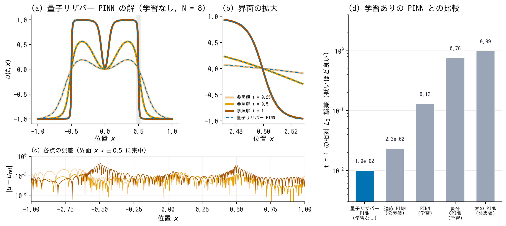

進捗：量子リザバー PINN で Allen–Cahn 方程式が解けた
2026-11-04

学習なし
（最小二乗だけ）で Raissi らの例題を解いた．鋭い界面まで参照解と重なり，誤差は界面に集中（c）
t = 1 の誤差
1.0 × 10⁻²
：学習ありの PINN（0.13），変分 QPINN（0.76），公表の適応 PINN（2.3 × 10⁻²）より小さい（d）
次：Cahn–Hilliard（計算済み，整理中），2 次元の縮む円，データありとの比較
u
t
− 10
−4
u
xx
+ 5
u
3
− 5
u
= 0，
x
∈ [−1, 1]，周期境界，
u
(0,
x
) =
x
2
cos π
x
．量子ビット 8（特徴量 256 個），5 シードの幾何平均
西岡 佳祐（村松研究室）